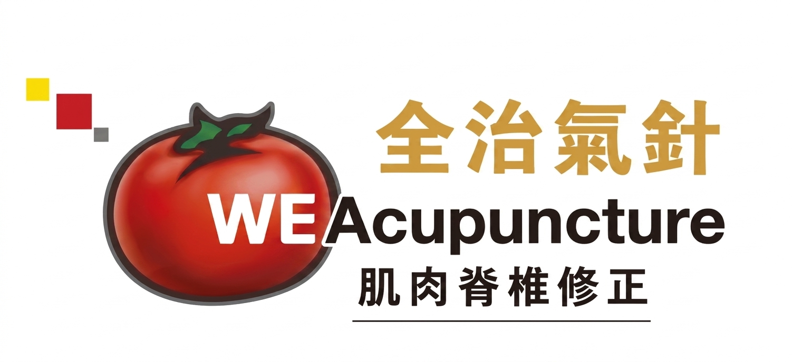

善用五行破健康及萬事萬物逆境大論
劍峰醫師在求學時期，因母親深受病痛折磨，深切體會到健康對個人及整個家庭的深遠影響，因而決定將此生奉獻於健康事業。從赴英國修讀醫療科學，到北京攻讀中醫理論博士，沿途有幸得到多位良師益友的悉心指導與啟發。在此，向以下恩師致以最誠摯的感謝：
致謝歷程恩師
在行醫的歷程中，我由營養師開始起步，逐步深入鑽研中醫整脊、日本靈氣及西方脊骨醫學。隨著臨床經驗的累積，能處理的身體問題日漸增多。在面對一般的肌肉與骨骼錯位時，已能掌握相對穩妥且具信心的復位修正方法。然而，在臨床上依然存在一種相當棘手的挑戰——退化性病變。
對於新症，因身體仍保有較強的自我修正與康復動力，醫師往往只需將關節與筋腱引導至正確位置，機體便能逐步自我復原。但面對退化性問題，無論給予何種傳統刺激，身體的反應普遍微弱，治療效果亦往往較為短暫。
為了尋求更穩定的療效，我開始專注於身體微觀的規律。研究中發現，人體各個部位其實存在一種自發性的微細律動，無論是左右擴張或左右旋轉，都呈現特定的頻率，且與病人的呼吸及心跳無關。後來，在接觸並學習顱骶治療（神經頻率）後，我理解到醫者若能順應並引導這種頻率，幫助病人將這種微弱的波動逐步穩定與擴大，退化性問題往往能獲得顯著的改善。
由於這套手法著重安全性與溫和性，入門門檻相對較低，目前已具備在工聯會或老人中心推廣的條件，以便長者們能在安全的前提下進行日常的互相保健。
儘管如此，這套手法仍有其局限——它僅能作用於可活動的關節，對於眼睛、耳鼻、大腦及內臟等範疇則難以觸及。幸運的是，在一次拜訪國內中醫的機緣下，我有機會親身體驗並接觸到「氣針」的應用。由於過往長期專研身體的神經頻率，在理解與掌握其原理時感到格外順暢。
在臨床體會中，氣針與神經頻率治療在內核上相通，皆需要醫師去調節並對準特定的生物頻率，與病人的機體產生共鳴。當頻率達成共振時，生物信號便能有效輸出，從而協助調整病人身體整體的修復韻律。隨著經驗的沉澱，這種頻率共振的距離與精準度亦會隨之提升。
行醫約 15 年、掌握氣針理論與實踐約 5 年後，研究迎來了新的突破。我發現與病人頻率產生共振時，除了傳遞基礎的波動外，若在輸出的波形（波形特性）上作進一步的精細調整，能產生不同的調理屬性，這與傳統中醫所提及的「木、火、土、金、s水」五行概念不謀而合。人體組織或許無法理解言語，但對生物波形的物理反饋卻非常直接。
至於在不同階段需要應用何種波形，這屬於相對前沿且抽象的探索，過往的文獻與師承已難以直接給予現成答案。我選擇回到古典中醫的整體觀，經歷反覆的實踐與觀察，逐步釐清了身體的修復進程：首先，需要「木」的元素來提供生長與修復組織的基礎動能；其次，需要「水」的特性進行滋潤，以協助清理體內的局部堵塞；隨後，則需要「火」的特質來促進溫通與血液循環。至於「土、金、日、月、光」等其餘波形頻率的臨床應用，日後有機會再與大家詳細分享。